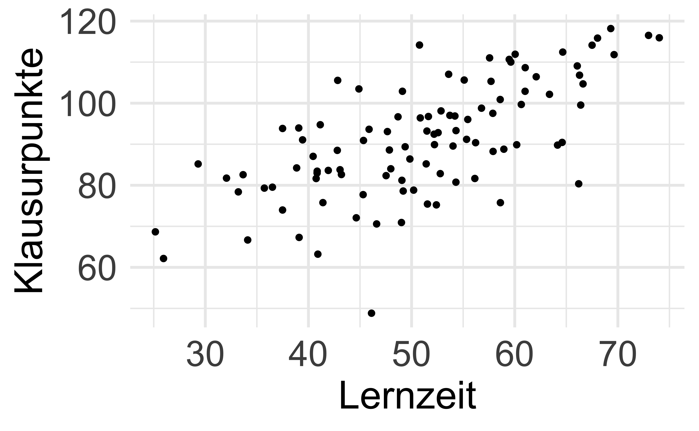
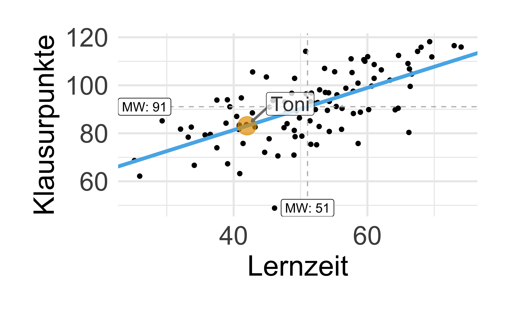
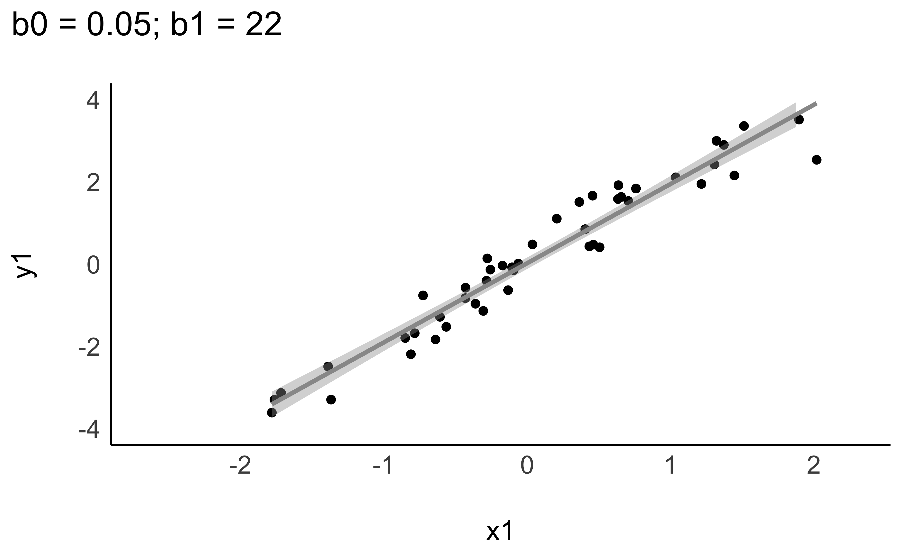
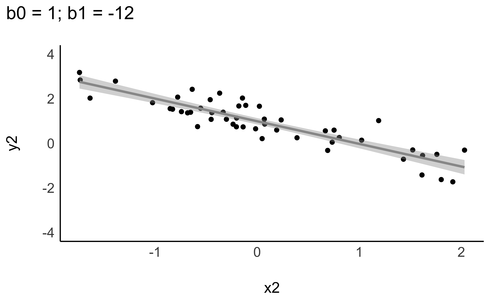
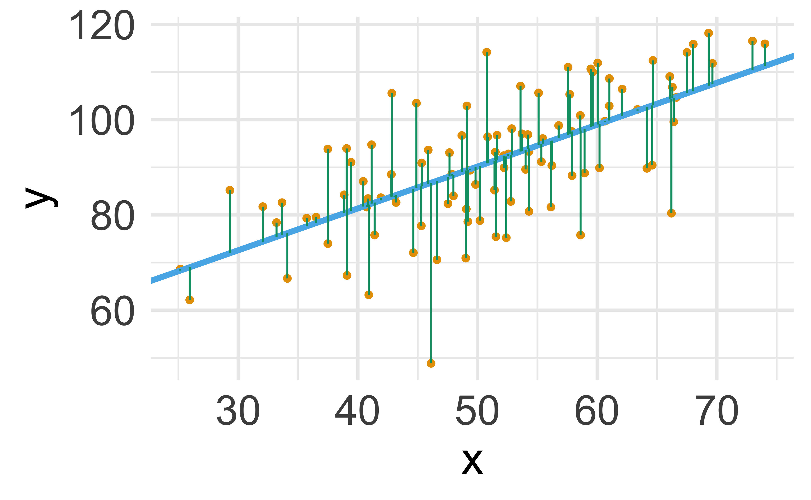
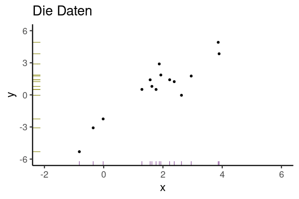
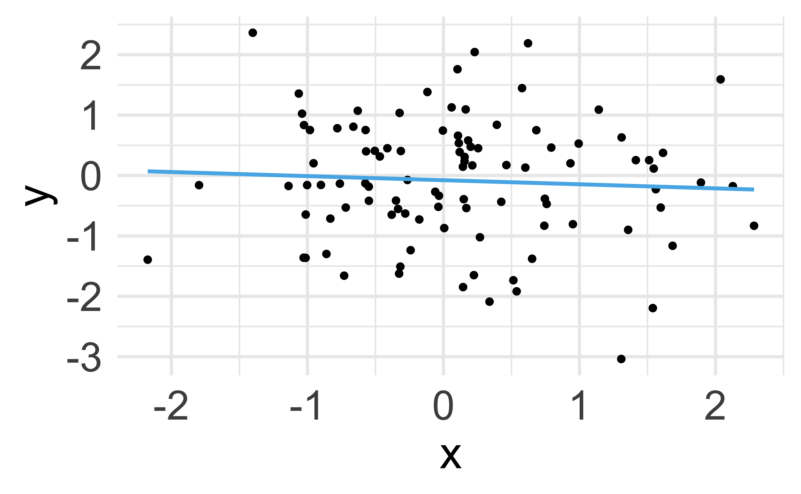
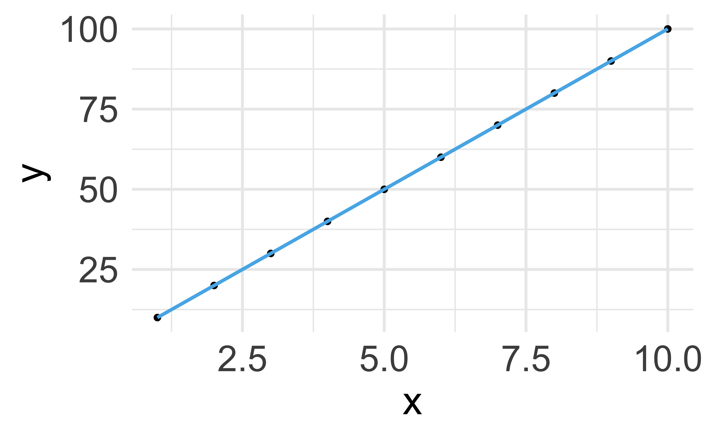
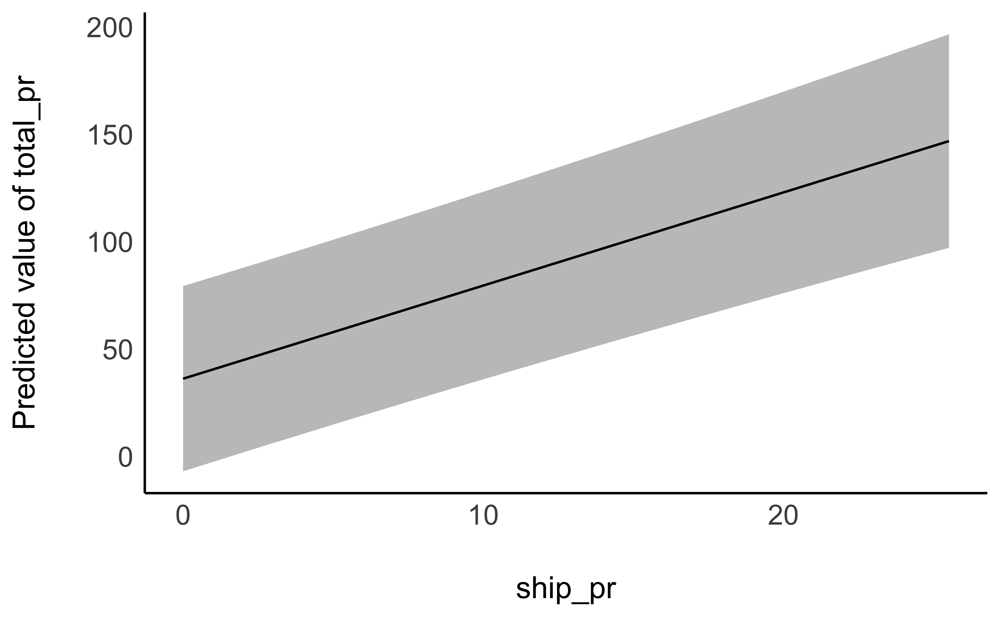

mariokart <- read.csv("https://vincentarelbundock.github.io/Rdatasets/csv/openintro/mariokart.csv")9 Geradenmodelle 1
Schlüsselwörter
Statistik, Prognose, Modellierung, R, Datenanalyse, Regression
\[ \definecolor{ycol}{RGB}{230,159,0} \definecolor{modelcol}{RGB}{86,180,233} \definecolor{errorcol}{RGB}{0,158,115} \definecolor{beta0col}{RGB}{213,94,0} \definecolor{beta1col}{RGB}{0,114,178} \definecolor{xcol}{RGB}{204,121,167} \]
9.1 Einstieg
In diesem Kapitel benötigen Sie die üblichen R-Pakete (tidyverse, easystats) und Daten (mariokart), s. Kapitel 3.7.3 und Kapitel 3.4.
9.1.1 Lernziele
- Sie können ein Punktmodell von einem Geradenmodell begrifflich unterscheiden.
- Sie können die Bestandteile eines Geradenmodells aufzählen und erläutern.
- Sie können die Güte eines Geradenmodells anhand von Kennzahlen bestimmen.
- Sie können Geradenmodelle sowie ihre Modellgüte in R berechnen.
9.2 Vorhersagen
Vorhersagen sind eine nützliche Sache, unter (mindestens) folgenden Voraussetzungen: 1. Sie sind präzise; 2. Wir wissen, wie präzise; 3. Jemand interessiert sich für die Vorhersage. Die Methode des Vorhersagens, die wir hier betrachten, nennt man auch lineare Regression.
9.2.1 Vorhersagen ohne UV
Beispiel 9.1 Nach intensiver Beschäftigung mit Statistik sind Sie allgemein als Daten-Checker bekannt. Viele Studierende fragen Sie um Rat. Eines Tages kommt eine Studentin zu Ihnen, Toni, und fragt: “Welche Statistiknote kann ich in der Klausur erwarten?” Sie entgegnen: “Wie viel hast du denn gelernt?”. Die Antwort: “Sage ich nicht.” Nach kurzem Überlegen geben Sie den Notenschnitt der letzten Klausur als Prognose für diese Person. Dazu rechnen Sie schnell den Notenschnitt (Mittelwert) aus.
Zuerst importieren Sie die Daten der letzten Klausur. Die Syntax in Listing 9.1 wird bei Ihnen nur funktionieren, wenn auf Ihrem Computer dieser Ordner mit dieser Datei existiert. Andernfalls müssen Sie die Daten erst herunterladen1:
noten2 <- read.csv("data/noten2.csv")noten2 %>%
summarise(mw = mean(y)) # y ist der Punktwert in der Klausur| mw |
|---|
| 91 |
Ihre Überlegung: “Im Schnitt haben die Studis bei der letzten Klausur ungefähr 91.12 erzielt. Diesen Wert kannst du erwarten. Solange ich keine genaueren Infos habe, z.\(\,\)B. wie viel du gelernt hast, kann ich dir keine genauere Vorhersage machen. Sorry!” \(\square\)
Ohne Kenntnis einer UV (Prädiktor) (wie z.\(\,\)B. Lernzeit) ist der Mittelwert ein geeigneter Vorhersagewert für jede Beobachtung, s. Abbildung 9.1. Wir nutzen den Mittelwert als Punktmodell für den Klausurerfolg. \(\square\)

Definition 9.1 (Nullmodell (Punktmodell)) Modelle ohne UV, Punktmodelle also, kann man so bezeichnen: y ~ 1. Da das Modell null UV hat, nennt man es auch manchmal Nullmodell. \(\square\)
Auf Errisch kann man dieses Nullmodell so spezifizieren:
# results: show
lm0 <- lm(y ~ 1, data = noten2)
lm0
##
## Call:
## lm(formula = y ~ 1, data = noten2)
##
## Coefficients:
## (Intercept)
## 91.1lm steht für “lineares Modell”, die 1 sagt, dass es keine Prädiktoren gibt. In dem Fall wird der Mittelwert, 91, als Gerade verwendet. Der zurückgemeldete Koeffizient (Intercept) ist in diesem Fall der einzige Koeffizient des Modells. Da es ein Punktmodell ist, sagt es für alle Beobachtungen (hier Studierenden) den gleichen Wert vorher, nämlich 91.
9.2.2 Vorhersagen mit UV
Beispiel 9.2 (Toni verrät die Lernzeit) Toni entschließt sich dann doch noch, die Lernzeit zu verraten: “Okay, also ich hab insgesamt 42 Stunden gelernt, insgesamt.” Jetzt müssen Sie erstmal nachdenken: “Wie viele Klausurpunkte sage ich vorher, wenn Toni 42 Stunden gelernt hat?”
Sie visualisieren sich zur Hilfe die vorliegenden Daten, s. Abbildung 9.2, (a).
library(DataExplorer)
noten2 %>%
plot_scatterplot(by = "y") # Y-Variable muss angegeben werdenAuf dieser Basis antworten Sie Toni: “Bei 42 Stunden Lernzeit solltest du so 83 Punkte bekommen. Könnte mit dem Bestehen eng werden.” Toni ist nicht begeistert von Ihrer Prognose und zieht von dannen. \(\square\)
Der “Trend” (im Sinne eines linearen Zusammenhangs) von Lernzeit und Klausurpunkte ist deutlich zu erkennen: Je mehr Lernzeit, desto mehr Klausurpunkte. Mit einem Lineal könnte man eine entsprechende Gerade in das Streudiagramm einzeichnen, s. Abbildung 9.2, (b).


9.3 Geradenmodelle
9.3.1 Achsenabschnitt und Steigung definieren eine Gerade
Wir verwenden eine Gerade als Modell für die Daten, s. Abbildung 9.2, b. Anders gesagt: Wir modellieren die Daten (bzw. deren Zusammenhang) mit einer Geraden. Ein Geradenmodell ist eine Verallgemeinerung des Punktmodells: Ein Punktmodell sagt für alle Beobachtungen den gleichen Wert vorher. Abbildung 9.1 und Abbildung 9.2 stellen ein Punktmodell einem Geradenmodell gegenüber.
In einem Geradenmodell wird nicht mehr (notwendig) für jede Beobachtung die gleiche Vorhersage \(\hat{y}\) gemacht (wie das bei einem Punktmodell der Fall ist).
Definition 9.2 (Gerade) Eine Gerade ist das, was man bekommt, wenn man eine lineare Funktion in ein Koordinatensystem einzeichnet. Man kann sie durch durch zwei Koeffizienten festlegen: Achsenabschnitt (engl. intercept), und Steigung (engl. slope). \(\square\)
Manchmal wird (z.\(\,\)B. im Schulunterricht) der Achsenabschnitt mit \(t\) und die Steigung mit \(m\) bezeichnet:
\(f(\color{xcol}{x})=\color{ycol}{y}={m} \color{xcol}{x} + \color{beta0col}{t}\).
In der Statistik wird folgende Nomenklatur bevorzugt: \(f(\color{xcol}{x})=\color{ycol}{\hat{y}}=\color{beta0col}{\beta_0} + \color{beta1col}{\beta_1} \color{xcol}{x}\) oder \(f(\color{xcol}{x})=\color{ycol}{\hat{y}}= \color{beta0col}{b_0} + \color{beta1col}{b_1} \color{xcol}{x}\) .
Die Nomenklatur mit \(\color{beta0col}{b_0}, \color{beta1col}{b_1}\) hat den Vorteil, dass man das Modell einfach erweitern kann: \(b_2, b_3, \ldots\). Anstelle von \(b\) liest man auch oft \(\beta\). Griechische Buchstaben werden meist verwendet, um zu zeigen, dass man an einer Aussage über eine Population, nicht nur über eine Stichprobe, machen möchte.
Das “Dach” über y, \(\color{modelcol}{\hat{y}}\) (sprich: “y-Dach”), drückt aus, dass es sich den den geschätzten, bzw. vom Modell vorhergesagten (“modellierten”) Wert für \(\color{ycol}{y}\) handelt, nicht der tatsächliche (empirische, beobachtete) Wert von \(\color{ycol}{y}\). Abbildung 9.3 skizziert die Elemente einer Regression.

Definition 9.3 (Das einfache lineare Modell) Das einfache lineare Modell beschreibt den Wert einer abhängigen metrischen Variablen, \(\color{ycol}{y}\), als lineare Funktion von einer (oder mehreren) unabhängigen Variablen, \(\color{xcol}{x}\), plus einem Fehlerterm, \(\color{errorcol}{e}\) bzw. \(\color{errorcol}{\epsilon}\), s. Gleichung 9.1. \(\square\)
\[\begin{aligned} \color{ycol}{y} &= f(\color{xcol}{x}) + \color{errorcol}{\epsilon} \\ \color{ycol}{y_i} &= \color{beta0col}{\beta_0} + \color{beta1col}{\beta_1} \cdot \color{modelcol}{x_i} + \color{errorcol}{\epsilon_i} \square \end{aligned} \tag{9.1}\]
Die Variablen in Gleichung 9.1 haben folgende Bedeutung:
- \(\color{beta0col}{\beta_0}\): geschätzter y-Achsenabschnitt laut Modell (engl. intercept)
- \(\color{beta1col}{\beta_1}\): geschätzte Steigung (Regressionsgewicht) laut Modell (engl. slope)
- \(\color{errorcol}{\epsilon}\): Fehler des Modells
In Gleichung 9.1 schreiben wir \(\color{ycol}{y}\) und nicht \(\color{modelcol}{\hat{y}}\), weil wir den tatsächlichen, beobachteten Wert von \(\color{ycol}{y}\) als Summe von vorhergesagtem Wert, \(\color{modelcol}{\hat{y}}\) und Modellfehler, \(\color{errorcol}{\epsilon}\) beschreiben.
Je nach Datenlage können sich Regressionsgeraden in Steigung oder Achsenabschnitt unterscheiden, s. Abbildung 9.4.


Abbildung 9.5 zeigt ein interaktives Beispiel einer linearen Funktion. Sie können Punkte per Klick/Touch hinzufügen.
Beispiel 9.3 (Toni will es genau wissen) Da Toni Sie als Statistik-Profi abgespeichert hat, werden Sie wieder konsultiert: “Okay, ich hab noch zwei Fragen. Erstens: Wie viele Punkte bekomme ich, wenn ich gar nicht lerne? Zweitens, wie viele Punkte bekomme ich pro gelernte Stunde? Ist immerhin meine Lebenszeit, krieg ich nicht zurück!” Das sind gute Fragen. Den \(\color{ycol}{Y}\)-Wert (Klausurpunkte) bei \(\color{xcol}{x}=0\) gibt der Achsenabschnitt zurück. Schnell skizzieren Sie dazu ein Diagramm, s. Abbildung 9.6. Puh, die Antwort wird Toni nicht gefallen … \(\square\)

Anstelle auf Abbildung 9.6 zu schauen, können Sie sich auch von R Tonis Klausurerfolg vorhersagen (to predict) lassen:
🧑🏫 Hey R, predicte mir mal auf Basis vom Modell “lm_toni” den Lernerfolg für Toni, wenn der x=0 Stunden lernt.
🤖 Okay, ich predicte mit Modell “lm_toni” und nehme als neue Datentabelle Tonis Lernzeit (x=0)!
tonis_lernzeit <- tibble(x = 0) # `tibble` erstellt einen Dataframepredict(lm_toni, newdata = tonis_lernzeit)
## 1
## 46predict erwartet für das Argument newdata einen Dataframe. In diesem Beispiel heißt er tonis_lernzeit.
9.3.2 Spezifikation eines Geradenmodells
Ein Geradenmodell kann man im einfachsten Fall spezifizieren wie Gleichung 9.2 dargestellt.
\[\color{ycol}{\hat{y}} \sim \color{xcol}{\text{x}} \tag{9.2}\]
Lies: “Laut meinem Modell ist mein vorhergesagtes \(\color{ycol}{\hat{y}}\) irgendeine Funktion von \(\color{xcol}{\text{x}}\)”. Wir erinnern uns, dass \(\color{ycol}{Y}\) die \(\color{ycol}{AV}\) und \(\color{xcol}{X}\) die \(\color{xcol}{UV}\) ist: \(\color{ycol}{AV} \sim \color{xcol}{UV}\).
Wir werden als Funktion nur Geraden verwenden. Die genauen Werte der Gerade lassen wir uns vom Computer ausrechnen. Gleichung 9.2 können Sie so ins Errische übersetzen: lm(y ~ x, data = meine_daten).
lm steht für “lineares Modell”, also eine Gerade als Modell. Die Gerade nennt man auch Regressionsgerade (an anderer Stelle in diesem Buch unscharf als “Trendgerade” bezeichnet).
Beispiel 9.4 (Zahlen für Toni) Toni ist nicht zufrieden mit Ihren Vorhersagen: “Jetzt hör mal auf mit deinem Lineal hier herum zu malen. Ich will es genau wissen, sage mir präzise Zahlen!”.
lm_toni <- lm(y ~ x, data = noten2)
lm_toni
##
## Call:
## lm(formula = y ~ x, data = noten2)
##
## Coefficients:
## (Intercept) x
## 46.191 0.879R gibt Ihnen die beiden Koeffizienten für die Gerade aus. Den Namen des Objekts können Sie frei aussuchen, z.\(\,\)B. mein_erstes_lm. Die Regressionsgleichung lautet demnach: y_pred = 8.6 + 0.88*x.
8.6 ist der Achsenabschnitt, d.\(\,\)h. der Wert von \(\color{ycol}{Y}\) wenn \(\color{xcol}{x}=0\). 0.88 ist das Regressionsgewicht, d.\(\,\)h. die Steigung der Regressionsgeraden: Für jede Stunde Lernzeit steigt der vorhergesagte Klausurerfolg um 0.88 Punkte.
Mit Kenntnis der beiden Koeffizienten kann man beliebige \(\color{ycol}{Y}\)-Werte ausrechnen, gegeben bestimmte \(\color{xcol}{X}\)-Werte. Hat jemand zum Beispiel 73 Stunden gelernt, würden wir folgendes Klausurergebnis vorhersagen:
lernzeit <- 73
y_pred <- 46 + 0.88*lernzeit
y_pred
## [1] 110Beispiel 9.5 (Vorhersage für Klausurerfolg, nächster Versuch) Sie versuchen, noch etwas Gutes für Toni zu tun. R hilft Ihnen dabei und rechnet die erwartete Punktzahl aus, wenn Toni 73 Stunden lernt. Sie dürfen es aber auch selber rechnen, wenn Ihnen das lieber ist.
tonis_lernzeit2 <- tibble(x = 73) tonis_lernzeit2 ist eine Tabelle mit einer Zeile und einer Spalte:
tonis_lernzeit2| x |
|---|
| 73 |
predict(lm_toni, newdata = tonis_lernzeit2)
## 1
## 110Die Syntax von predict lautet:
predict(modell, newdata = tabelle_mit_prädiktorwerten)Die Funktion predict liefert eine Vorhersage für ein ein Modell, z.\(\,\)B. lm_toni, und für einen bestimmten Dataframe (der die Werte der UV enthalten muss).
9.3.3 Vorhersagefehler
Die Differenz zwischen vorhergesagtem Wert für eine (neue) Beobachtung, \(\color{modelcol}{\hat{y_0}}\) und ihrem tatsächlichen Wert nennt man Vorhersagefehler (error, \(e\)) oder Residuum: \(\color{errorcol}{e_i} = \color{ycol}{y_i} - \color{modelcol}{\hat{y}_i}\).


Wie ist es mit den Vorhersagefehlern von beiden Modellen bestellt? Lassen wir uns von R die Streuung (Residuen) in Form der mittleren Absolutabweichung (MAE) ausgeben (aus dem Paket easystats):
mae(lm0)
mae(lm_toni)
## [1] 11
## [1] 8Vergleichen wir MAE im Nullmodell mit MAE in lm_toni:
verhaeltnis_fehler_mae <- mae(lm_toni) / mae(lm0)
verhaeltnis_fehler_mae
## [1] 0.71Ah! Das Geradenmodell ist viel besser: Von lm0 zu lm_toni haben die mittlere Absolutlänge des Fehlerbalkens auf 71 Prozent verbessert. Nicht schlecht!
Definition 9.4 (Fehlerstreuung) Als Fehlerstreuung bezeichnen wir die Verteilung der Abweichungen der beobachteten Werte (\(y_i\)) vom vorhergesagten Wert (\(\hat{y}_i\)). \(\square\)
Zur Berechnung der Fehlerstreuung gibt es mehrere Kenngrößen wie MAE oder MSE. Ein Geradenmodell ist immer besser als ein Punktmodell (im Hinblick auf die Verringerung der Fehlerstreuung), solange X mit Y korreliert ist. Natürlich können wir – in Analogie zur Varianz – auch den mittleren Quadratfehlerbalken (Mean Squared Error, MSE) berechnen. Wer mag, kann den MSE auch von Hand berechnen: mean((noten2$y - mean(noten2$y))^2).
mse(lm0)
mse(lm_toni)
## [1] 193
## [1] 106verhaeltnis_fehler_mse <- mse(lm_toni)/mse(lm0)
verhaeltnis_fehler_mse
## [1] 0.55Betrachtet man die MSE, so kann man eine Verbesserung um 0.45 auf 0.55 feststellen.
9.3.4 Berechnung der Modellkoeffizienten
Aber wie legt man die Regressionsgerade in das Streudiagramm, bildlich gesprochen? Die Regressionskoeffizienten (hier synonym: Modellparameter) \(\beta_0\) und \(\beta_1\) wählt man so, dass die Residuen minimal sind. Genauer gesagt wird die Summe der quadrierten Residuen minimiert, s. Gleichung 9.3.
Abbildung 9.8 veranschaulicht die Minimierung der Residuen (Vorhersagefehler).

\[\text{min}\sum_i \color{errorcol}{e_i}^2 \tag{9.3}\]
Es gibt verschiedene Methoden, um die Koeffizienten zu berechnen (die aber nicht in diesem Buch zu finden sind). Eine schöne Darstellung dazu findet sich bei Kaplan (2009).
“Von Hand” können Sie die Optimierung von \(\beta_0\) und \(\beta1\) in dieser App der FOM-Hochschule2 ausprobieren.
9.4 \(R^2\) als Maß der Modellgüte
Das Modell lm_toni weist noch 0.55 der Fehlerstreuung (MSE) des Nullmodells auf. Anders gesagt, wir haben uns ( (bzw. das Modell hat sich) um \(1 - 0.55\) verbessert.
1 - verhaeltnis_fehler_mse
## [1] 0.45Definition 9.5 (\(R^2\)-Quadrat) Der Anteil der Verringerung (als Anteil) der Fehlerstreuung der Zielvariablen zwischen lm0 und dem gerade untersuchten Modell nennt man R-Quadrat (\(R^2\)). Das R-Quadrat (\(R^2\)) eines Modells \(m\) ist definiert als die Verringerung der Streuung, wenn man das Modell \(m\) mit dem Nullmodell \(m_0\) vergleicht: \(R^2 =1- \frac{\text{MSE}_{m}}{\text{MSE}_{m0}}\). R-Quadrat ist ein Maß der Modellgüte: Je größer \(R^2\), desto besser ist die Vorhersage. Da es ein Anteilsmaß ist, liegt der Wertebereich zwischen 0 und 1. Im Nullmodell beträgt R-Quadrat per Definition Null. Im Fall von Modellen des Typs \(y\sim x\) gilt: \(R^2 = r_{xy}^2\). \(\square\)
Einfach gesagt: \(R^2\) gibt an, wie gut (zu welchem Anteil) ein Modell die Zielvariable, \(y\), erklärt. Wir können R-Quadrat (\(R^2\)) uns von R z.\(\,\)B. so ausgeben lassen:
r2(lm_toni)
## # R2 for Linear Regression
## R2: 0.448
## adj. R2: 0.442Bei einer perfekten Korrelation ist \(r=1\), daher ist dann auch \(R^2 = 1\), vgl. Abbildung 9.9.


Bei einer perfekten Korrelation \(R^2=1\) liegen die Punkte auf der Geraden. Im gegenteiligen Extremfall von \(R^2=0\) ist die Vorhersage genauso gut, wie wenn man für jedes \(y\) den Mittelwert, \(\color{ycol}{\bar{y}}\) , vorhersagen würde. Je größer R-Quadrat, desto besser passt das Modell zu den Daten; desto besser “erklärt” das Modell die Daten (desto besser der “Fit” des Modells zu den Daten, sagt man).
Diese App der FOM-Hochschule erlaubt es Ihnen mit der Größe der Residuen eines linearen Modells zu spielen.
9.5 Interpretation eines Regressionsmodells
9.5.1 Modellgüte
Die Residuen (Vorhersagefehler) bestimmen die Modellgüte: Sind die Residuen im Schnitt groß, so ist die Modellgüte gering (schlecht), und umgekehrt. Verschiedenen Koeffizienten stehen zur Verfügung: \(R^2\), \(r\) (als Korrelation von tatsächlichem \(y\) und vorhergesagten \(\hat{y}\)), MSE, RMSE, MAE, …
9.5.2 Koeffizienten
Die Modellkoeffizienten, also Achsenabschnitt (\(\beta_0\)) und Steigung (\(\beta_1\)) sind nur eingeschränkt zu interpretieren, wenn man die zugrundeliegenden kausalen Abhängigkeiten nicht kennt. Allein aufgrund eines statistischen Zusammenhangs darf man keine kausalen Abhängigkeiten annehmen. Ohne eine zugrundeliegende Theorie für eine Kausalbehauptung kann man kann nur deskriptiv argumentieren. Oder sich mit der Modellgüte und den Vorhersagen begnügen. Was auch was wert ist.
Im Modell lm_toni liegt der Achsenabschnitt bei \(\textcolor{ycol}{y}=46.19\). Beobachtungen mit \(\color{xcol}{x}=0\) können also diesen \(\textcolor{ycol}{Y}\)-Wert erwarten, laut lm_toni. Leider ist es häufig so, dass UV mit Wert 0 in der Praxis nicht realistisch sind, so dass der Achsenabschnitt dann wenig nützt.
Beispiel 9.6 (Regression Größe und Gewicht) Nutzt man Körpergröße und das Gewicht von Menschen vorherzusagen, ist der Achsenabschnitt von Körpergröße wenig nützlich, da es keine Menschen gibt der Größe 0. \(\square\)
So interpretiert man die Geradensteigung, \(\beta_1\): “Im Modell lm_toni beträgt der Regressionskoeffizient \(\beta_1 = 0.88\). Zwei Studentinnen, deren Lernzeit sich um eine Stunde unterscheidet, unterscheiden sich laut Modell um den Wert von \(\beta_1\)”.
Vorsicht
Häufig liest man, der “Effekt der UV” auf die AV betrage z.\(\,\)B. \(0.88\). “Effekt” ist aber ein Wort, das man leicht kausal verstehen kann. Ohne weitere Absicherung kann man aber Regressionskoeffizienten nicht kausal verstehen. Daher sollte man das Wort “Effekt” mit Vorsicht genießen. Manche sprechen daher auch von einem “statistischen Effekt”, um zu verdeutlichen, dass keine Kausalaussage impliziert ist. \(\square\)
9.6 Wie man mit Statistik lügt
Der Unterschied in Modellgüte zwischen, sagen wir, \(r=.1\) und \(r=.2\) ist viel kleiner als zwischen \(r=.7\) und \(r=.8\). \(R^2\) ist ein (lineares) Maß der Modellgüte und da \(r = \sqrt{R^2}\), dürfen Unterschiede in \(r\) nicht auf die gleiche Weise interpretiert werden wie Unterschiede in \(R^2\). Abbildung 9.10 zeigt den Zusammenhang von \(r\) und \(R^2\).
Vorsicht
Unterschiede zwischen Korrelationsdifferenzen dürfen nicht linear interpretiert werden. \(\square\)
9.7 Fallbeispiel Mariokart
9.7.1 Der Datenwahrsager legt los
Als mittlerweile anerkannter Extrem-Datenanalyst in dem Online-Auktionshaus, in dem Sie arbeiten, haben Sie sich neue Ziele gesetzt. Sie möchten eine genaue Vorhersage von Verkaufspreisen erzielen. Als Sie von diesem Plan berichteten, leuchteten die Augen Ihrer Chefin. Genaue Vorhersagen sind von hoher betriebswirtschaftlicher Relevanz. Mariokart-Daten laden, am besten ohne Extremwerte, s. Listing 5.4 und los geht’s (und die üblichen Pakete starten, nicht vergessen)!
mariokart <- read.csv("https://vincentarelbundock.github.io/Rdatasets/csv/openintro/mariokart.csv")lm2 <- lm(total_pr ~ start_pr, data = mariokart)
r2(lm2)
## # R2 for Linear Regression
## R2: 0.005
## adj. R2: -0.002Oh nein! Unterirdisch schlecht. Anstelle von bloßem Rumprobieren überlegen Sie und schauen dann nach, welche Variable am stärksten korreliert mit total_pr; es resultiert lm3. Dann lassen Sie sich die Modellparameter ausgeben, s. Tabelle 9.1.
lm3 <- lm(total_pr ~ ship_pr, data = mariokart)| Parameter | Coefficient | SE | 95% CI | t(141) | p |
|---|---|---|---|---|---|
| (Intercept) | 36.25 | 2.54 | (31.23, 41.26) | 14.28 | < .001 |
| ship pr | 4.34 | 0.57 | (3.22, 5.46) | 7.67 | < .001 |
Der Achsenabschnitt liegt bei ca. 36 Dollar, wie man in Tabelle 9.1 sieht: Ein Spiel, das mit null Dollar Preis startet, kann laut lm3 etwa 36 Dollar finaler Verkaufspreis erwarten. Pro Dollar an Versandkosten (ship_pr) steigt der zu erwartende finale Verkaufspreis um ca. 4 Dollar. (Die Spalte 95 CI gibt einen Schätzbereich für den jeweiligen Modellkoeffizienten an, denn es handelt sich bei den Koeffizienten um Schätzwerte; der wahre Wert in der Population ist unbekannt. Wir kennen schließlich nur eine Stichprobe der Größe \(n = 143\).) Die Regressionsgleichung von lm3 lautet demnach: total_pr_pred = 36 + 4*ship_pr.
In Worten:
Der vorhergesagte Gesamptreis eines Spiels liegt bei 36 Dollar “Sockelbetrag” plus 4 mal die Versandkosten.
9.7.2 Vertiefung
Man kann sich die erwarteten Werte (“expectations”) des Verkaufspreises in Abhängigkeit vom Wert der UV (ship_pr) auch schätzen (“to estimate”) lassen, und zwar so mit estimate_expectation(lm3), s. Tabelle 9.2.
| ship_pr | Predicted | SE | 95% CI | Residuals |
|---|---|---|---|---|
| 4.00 | 53.59 | 1.87 | (49.89, 57.30) | -2.04 |
| 3.99 | 53.55 | 1.87 | (49.85, 57.25) | -16.51 |
| 3.50 | 51.43 | 1.82 | (47.82, 55.03) | -5.93 |
| 0.00 | 36.25 | 2.54 | (31.23, 41.26) | 7.75 |
| 0.00 | 36.25 | 2.54 | (31.23, 41.26) | 34.75 |
| 4.00 | 53.59 | 1.87 | (49.89, 57.30) | -8.59 |
Variable predicted: total_pr
“Ah, bei 4 Dollar Versandkosten ist laut dem Modell knapp 54 Dollar Verkaufspreis zu erwarten”, fassen Sie sich die Ausgabe zusammen.
🤖 Das sieht man in der Spalte
Predicted, dort steht der vorhersagte Wert fürtotal_prfür einen bestimmten Wert vonship_pr.
🧑🎓 Kann ich auch
predictbenutzen? Ich würde gerne den Verkaufspreis wissen, wenn die Versandkosten bei 1 und bei 4 Dollar liegen.
🤖 Ja, klar!
neue_daten <- tibble(
ship_pr = c(1, 4)) # zwei Werte zum Vorhersagenpredict(lm3, newdata = neue_daten)
## 1 2
## 41 54Aber nützlich wäre noch, das Modell (bzw. die Schätzung der erwarteten Werte) als Diagramm zu bekommen. Das erreicht man z.\(\,\)B. so, s. Abbildung 10.10.
estimate_prediction(lm3, by = "ship_pr") %>% plot()

estimate_expectation heißt sinngemäß “schätze den zu erwartenden Wert”. Kurz gesagt: Wir wollen eine Vorhersage von R.
Am wichtigsten ist Ihnen aber im Moment die Frage, wie “gut” das Modell ist, spricht wie lang oder kurz die (absoluten) Vorhersagefehler-Balken sind:
mae(lm3)
## [1] 13Das Modell erklärt einen Anteil von ca. 0.29 der Gesamtstreuung.
r2(lm3)
## # R2 for Linear Regression
## R2: 0.294
## adj. R2: 0.289mae(lm3)
## [1] 13Im nächsten Meeting erzählen Sie Ihrer Chefin “Ich kann den Verkaufspreis von Mariokart-Spielen im Schnitt auf 13 Dollar genau vorhersagen!”. Hört sich gut an. Allerdings hätte es Ihre Chefin gerne genauer. Kann man da noch was machen?
9.8 Fallstudie Immobilienpreise
Vorsicht
Diese Fallstudie führt in die Prüfungsleistung “Prognosewettbewerb” ein. Es empfiehlt sich für Sie, diese Fallstudie sorgsam zu bearbeiten. \(\square\)
9.8.1 Hintergrund
In dieser Fallstudie geht es darum, die Preise von Immobilien vorherzusagen. Kurz gesagt: Sagen Sie die Hauspreise vorher, und reichen Sie Ihre Vorhersagen als CSV bei kaggle.com ein. Kaggle ist eine Webseite, die Prognosewettbewerbe veranstaltet. In dieser Fallstudie nehmen Sie teil an der Kaggle-Competition “House Prices - Advanced Regression Techniques”, die Sie auf der Kaggle-Webseite finden. Dort finden Sie auch eine nähere Beschreibung, das Ziel und die Spielregeln des Wettbewerbs.
9.8.2 Daten
Sie können die Daten von www.kaggle.com herunterladen. Im Einzelnen müssen Sie folgende Dateien herunterladen:
- Data_description.txt: Codebook, d.\(\,\)h. Beschreibung der Variablen im Datensatz
- train.csv: Daten von Häusern, die Sie nutzen, um Modelle zu erstellen
- test.csv: Daten von Häusern, von denen Sie den Kaufpreis vorhersagen sollen
- sample_submission.csv: Beispielhafte Prognosedatei, die Datei also, mit der Sie Ihre Vorhersagen einreichen, s. Tabelle 9.3
Sie können auch über das Github-Repo statistik1, Ordner data auf die Daten zugreifen:
d_train_path_online <- paste0(
"https://raw.githubusercontent.com/sebastiansauer/statistik1/",
"refs/heads/main/data/kaggle-train.csv")
d_test_path_online <- paste0(
"https://raw.githubusercontent.com/sebastiansauer/statistik1/",
"refs/heads/main/data/kaggle-test.csv")
d_train <- read.csv(d_train_path_online)
d_test <- read.csv(d_test_path_online)Laden Sie diese Daten am besten herunter und speichern Sie sie in einem passenden Unterverzeichnis (Ihres Projektordners in RStudio) ab. Importieren wir die Daten aus dem Unterordner data in R (davon ausgehend, dass der Unterordner data ein Unterordner Ihres aktuellen R-Projekts ist):
Wenn das Importieren von Ihrem Computer nicht klappen sollte … Es ist zwar hilfreich, wenn man Daten von der eigenen Festplatte importieren kann. Aber fürs Erste können Sie die Daten auch von oben angegeben Online-Pfad importieren.
9.8.3 Prognosedatei
Die Prognosedatei ist die Datei, die Ihre Vorhersagen (Prognosen) enthält. Sie soll prinzipiell so aussehen wie in Tabelle 9.3 dargestellt.
| id | SalePrice |
|---|---|
| 1461 | 169277 |
| 1462 | 187758 |
| 1463 | 183584 |
Die Prognosedatei besteht also aus zwei Spalten: der Spalte id und der Spalte Saleprice. Die Spalte id gibt an, welches Haus in einer bestimmten Zeile Ihrer Prognosedatei gemeint ist – für welches Haus Sie also gerade einen Kaufpreis vorhersagen. die Spalte SalePrice enthält Ihre Vorhersage für den Kaufpreis das Hauses mit der Id, die in der betreffenden Zeile steht. Insgesamt soll die Prognosedatei genau so viele Zeilen haben wie der Test-Datensatz, also die Tabelle, die die vorherzusagenden Werte angibt. Alles klar? Los geht’s!
9.8.4 Ein erster Blick in die Daten
Schauen Sie sich zu Beginn einmal die Verteilung der metrischen Variablen, z.\(\,\)B. mit describe_distribution(d_train) an.
| Variable | Mean | SD | IQR | Range | Skewness | Kurtosis | n | n_Missing |
|---|---|---|---|---|---|---|---|---|
| Id | 730.50 | 421.61 | 730.50 | (1.00, 1460.00) | 0.00 | -1.20 | 1460 | 0 |
| MSSubClass | 56.90 | 42.30 | 50.00 | (20.00, 190.00) | 1.41 | 1.58 | 1460 | 0 |
| LotFrontage | 70.05 | 24.28 | 21.00 | (21.00, 313.00) | 2.16 | 17.45 | 1201 | 259 |
| LotArea | 10516.83 | 9981.26 | 4060.00 | (1300.00, 2.15e+05) | 12.21 | 203.24 | 1460 | 0 |
| OverallQual | 6.10 | 1.38 | 2.00 | (1.00, 10.00) | 0.22 | 0.10 | 1460 | 0 |
| OverallCond | 5.58 | 1.11 | 1.00 | (1.00, 9.00) | 0.69 | 1.11 | 1460 | 0 |
| YearBuilt | 1971.27 | 30.20 | 46.00 | (1872.00, 2010.00) | -0.61 | -0.44 | 1460 | 0 |
| YearRemodAdd | 1984.87 | 20.65 | 37.00 | (1950.00, 2010.00) | -0.50 | -1.27 | 1460 | 0 |
| MasVnrArea | 103.69 | 181.07 | 166.00 | (0.00, 1600.00) | 2.67 | 10.08 | 1452 | 8 |
| BsmtFinSF1 | 443.64 | 456.10 | 712.75 | (0.00, 5644.00) | 1.69 | 11.12 | 1460 | 0 |
| BsmtFinSF2 | 46.55 | 161.32 | 0.00 | (0.00, 1474.00) | 4.26 | 20.11 | 1460 | 0 |
| BsmtUnfSF | 567.24 | 441.87 | 585.00 | (0.00, 2336.00) | 0.92 | 0.47 | 1460 | 0 |
| TotalBsmtSF | 1057.43 | 438.71 | 503.50 | (0.00, 6110.00) | 1.52 | 13.25 | 1460 | 0 |
| X1stFlrSF | 1162.63 | 386.59 | 509.75 | (334.00, 4692.00) | 1.38 | 5.75 | 1460 | 0 |
| X2ndFlrSF | 346.99 | 436.53 | 728.00 | (0.00, 2065.00) | 0.81 | -0.55 | 1460 | 0 |
| LowQualFinSF | 5.84 | 48.62 | 0.00 | (0.00, 572.00) | 9.01 | 83.23 | 1460 | 0 |
| GrLivArea | 1515.46 | 525.48 | 649.75 | (334.00, 5642.00) | 1.37 | 4.90 | 1460 | 0 |
| BsmtFullBath | 0.43 | 0.52 | 1.00 | (0.00, 3.00) | 0.60 | -0.84 | 1460 | 0 |
| BsmtHalfBath | 0.06 | 0.24 | 0.00 | (0.00, 2.00) | 4.10 | 16.40 | 1460 | 0 |
| FullBath | 1.57 | 0.55 | 1.00 | (0.00, 3.00) | 0.04 | -0.86 | 1460 | 0 |
| HalfBath | 0.38 | 0.50 | 1.00 | (0.00, 2.00) | 0.68 | -1.08 | 1460 | 0 |
| BedroomAbvGr | 2.87 | 0.82 | 1.00 | (0.00, 8.00) | 0.21 | 2.23 | 1460 | 0 |
| KitchenAbvGr | 1.05 | 0.22 | 0.00 | (0.00, 3.00) | 4.49 | 21.53 | 1460 | 0 |
| TotRmsAbvGrd | 6.52 | 1.63 | 2.00 | (2.00, 14.00) | 0.68 | 0.88 | 1460 | 0 |
| Fireplaces | 0.61 | 0.64 | 1.00 | (0.00, 3.00) | 0.65 | -0.22 | 1460 | 0 |
| GarageYrBlt | 1978.51 | 24.69 | 41.00 | (1900.00, 2010.00) | -0.65 | -0.42 | 1379 | 81 |
| GarageCars | 1.77 | 0.75 | 1.00 | (0.00, 4.00) | -0.34 | 0.22 | 1460 | 0 |
| GarageArea | 472.98 | 213.80 | 244.50 | (0.00, 1418.00) | 0.18 | 0.92 | 1460 | 0 |
| WoodDeckSF | 94.24 | 125.34 | 168.00 | (0.00, 857.00) | 1.54 | 2.99 | 1460 | 0 |
| OpenPorchSF | 46.66 | 66.26 | 68.00 | (0.00, 547.00) | 2.36 | 8.49 | 1460 | 0 |
| EnclosedPorch | 21.95 | 61.12 | 0.00 | (0.00, 552.00) | 3.09 | 10.43 | 1460 | 0 |
| X3SsnPorch | 3.41 | 29.32 | 0.00 | (0.00, 508.00) | 10.30 | 123.66 | 1460 | 0 |
| ScreenPorch | 15.06 | 55.76 | 0.00 | (0.00, 480.00) | 4.12 | 18.44 | 1460 | 0 |
| PoolArea | 2.76 | 40.18 | 0.00 | (0.00, 738.00) | 14.83 | 223.27 | 1460 | 0 |
| MiscVal | 43.49 | 496.12 | 0.00 | (0.00, 15500.00) | 24.48 | 701.00 | 1460 | 0 |
| MoSold | 6.32 | 2.70 | 3.00 | (1.00, 12.00) | 0.21 | -0.40 | 1460 | 0 |
| YrSold | 2007.82 | 1.33 | 2.00 | (2006.00, 2010.00) | 0.10 | -1.19 | 1460 | 0 |
| SalePrice | 1.81e+05 | 79442.50 | 84075.00 | (34900.00, 7.55e+05) | 1.88 | 6.54 | 1460 | 0 |
9.8.5 Ein erstes Vorhersagemodell
Eine einfache Antwort auf die Frage, welche Variablen sich zur Vorhersage eignen, ist, die Korrelation aller UV mit der AV zu berechnen, s. Listing 9.2.
Aha! Ein Menge Information … Wenn Sie Teile der Ausgabe der Tabelle nicht verstehen: Im Zweifel einfach ignorieren. Wenn Sie die R-Syntax nicht verstehen: Führen Sie die Syntax schrittweise aus. Zuerst d_train ausführen und das Ergebnis betrachten. Dann d_train %>% select(-Id) ausführen, wieder die Ausgabe betrachten, usw. Die als Output von Listing 9.2 aufgeführten Variablen sind einigermaßen stark mit unserer Zielvariablen SalePrice korreliert. Nutzen wir also diese Variablen (oder einige von ihnen) zur Vorhersage. Tabelle 9.5 zeigt die Parameter von lm_immo1.
Im ersten Modell gehen wir davon aus, dass der Verkaufspreis im Großen und Ganzen durch den Zustand der Immobilie (OverallQual) vorhergesagt werden kann. Diese Variable ist am stärksten mit der Zielvariable korreliert und daher ein guter Kandidat für die Vorhersage.
lm_immo1 <- lm(SalePrice ~ OverallQual, data = d_train)
parameters(lm_immo1) # aus easystatslm_immo1
| Parameter | Coefficient |
|---|---|
| (Intercept) | -96206.08 |
| OverallQual | 45435.80 |
Wie gut ist das Modell?
rmse(lm_immo1) # aus easystats
## [1] 48589Im Schnitt liegen wir 4.86^{4} Dollar daneben. Ob das viel oder weniger ist, wird sich im Vergleich mit anderen Modellen zeigen.
R-Quadrat liefert einen anderen Blick auf die Modellgüte:
r2(lm_immo1) # aus easystats
## # R2 for Linear Regression
## R2: 0.626
## adj. R2: 0.625Man kann mehrere UV in ein Regressionsmodell aufnehmen. Dazu trennt man sie mit einem Pluszeichen in lm():
mein_modell <- lm(av ~ uv1 + uv2 + ... + uv_n, data = meine_daten)Dabei ist das Pluszeichen kein arithmetischer Operator, sondern sagt nur “als UV nimm UV1 und UV2 und …”. Berechnen wir als nächstes ein Modell mit mehreren UV, lm_immo2.
lm_immo2 <- lm(SalePrice ~ OverallQual + GrLivArea + GarageCars, data = d_train)
parameters(lm_immo2)Tabelle 9.6 zeigt die Koeffizienten von lm_immo2.
| Parameter | Coefficient |
|---|---|
| (Intercept) | -98832.49 |
| OverallQual | 27104.83 |
| GrLivArea | 50.67 |
| GarageCars | 21298.96 |
Wie gut sind die Vorhersagen des Modells lm_immo2 für die Daten von d_train?
rmse(lm_immo2)
## [1] 40566Im Schnitt liegen unsere Vorhersagen 4.06^{4} Dollar daneben. Ist das gut? Betrachten wir noch \(R^2\):
r2(lm_immo2)
## # R2 for Linear Regression
## R2: 0.739
## adj. R2: 0.739Ob die Modellgüte (R-Quadrat, RMSE, etc.) “gut” bzw. “hoch” ist, beantwortet man am besten relativ, also im Vergleich zu anderen Modellen.
Zum Vergleich berechnen wir das maximal einfache Modell: ohne UV. Man nennt es das Nullmodell. In diesem Modell sagen wir für jedes Haus einfach den mittleren Preis aller Häuser vorher.
m0 <- lm(SalePrice ~ 1, data = d_train)Wie gut ist die Vorhersage des Nullnodells?
rmse(m0)
## [1] 79415Beim Nullmodell liegen wir ca. 80 Tausend Dollar daneben. Das R-Quadrat der Nullmodells ist per Definition null:
r2(m0)
## # R2 for Linear Regression
## R2: 0.000
## adj. R2: 0.000
9.8.6 Vorhersagen im Test-Datensatz mit lm_immo2
Wir haben jetzt unseren Champion, lm_immo2. Alle Hoffnung ruht auf diesem Modell. Ob die Vorhersagen im Test-Sample präzise sein werden? Oder himmelweit daneben? Enttäusche uns nicht! Hier sind die Vorhersagen:
lm_immo2_pred <- predict(lm_immo2, newdata = d_test)
head(lm_immo2_pred)
## 1 2 3 4 5 6
## 103395 152441 161838 187676 225467 190260- 1
-
Erstelle eine Vorhersage anhand der Regressionsgerade von
lm_immo1und zwar anhand der Daten ausd_test. - 2
-
Zeige den “Kopf” der Vorhersagen (
lm_immo1_pred), d.\(\,\)h. die ersten paar Vorhersagen.
Die Vorhersagen fügen wir jetzt dem Test-Sample hinzu:
d_test <-
d_test %>%
mutate(SalePrice = lm_immo2_pred)9.8.7 Einreichen!
So, wir haben unsere Vorhersagen! Jetzt reichen wir diese Vorhersagen ein. Für die Prognosedatei (submission file) brauchen wir nur die Spalten id und SalePrice:
lm_immo2_subm <-
d_test %>%
select(Id, SalePrice)Diesen Tibble speichern wir als CSV-Datei an geeigneter Stelle ab. Es bietet sich an write_csv zu verwenden, da write.csv automatisch (ungefragt) noch eine Id-Spalte ohne Namen einfügt (mit den Zeilennummern), das mag aber Kaggle nicht. Kaggle erwartet exakt zwei Spalten und zwar mit den Namen Id und SalePrice.
write_csv(lm_immo2_subm, "data/ames-kaggle/lm_immo2_subm.csv")Und dann laden Sie diese Datei, lm2_subm.csv bei Kaggle hoch und hoffen auf einen Hauptgewinn. Das Modell erzielte einen Score von 0.55521.
Diese Fallstudie hat ein einfaches Prognosemodell vorgestellt. Sicherlich gibt es viele Ansätze, dieses Modell zu verbessern. Hier sind einige Fragen, die Sie sich dazu stellen können:
- Welche UV sollte ich in das Modell aufnehmen?
- Wie gehe ich mit fehlenden Werten um?
- Wenn eine UV schief ist, sollte ich ihn dann log-transformieren?
- Vielleicht sollte man manche UV quadrieren?
- Wie gehe ich mit nominalskalierten Variablen um, wenn diese viele Stufen haben?
- …
Viel Spielraum für Ihre Kreativität!
9.9 Aufgaben
Die Webseite datenwerk.netlify.app stellt eine Reihe von einschlägigen Übungsaufgaben bereit. Sie können die Suchfunktion der Webseite nutzen, um die Aufgaben mit den folgenden Namen zu suchen:
- Aussagen-einfache-Regr
- interpret-koeff-lm
- korr-als-regr
- Linearitaet1a
- lm1
- mtcars-regr01
- nichtlineare-regr1
- penguins-regr02
- regression1
- regression1b
- Regression3
- Regression4
- Regression5
- Regression6
- ames-kaggle1
Schauen Sie sich auch weitere Aufgaben des Datenwerks an, vor allem mit den Tags regression und lm.
Nicht alle Aufgaben aus dieser Sammlung passen zum Stoff dieses Kapitels; vielleicht können Sie einige Aufgaben nicht lösen. Ignorieren Sie einfach diese Aufgaben.
9.10 Literaturhinweise
Gelman et al. (2021) liefert eine deutlich umfassendere Einführung in die Regressionsanalyse als dieses Kapitel es tut. Eine moderne, R-orientierte Einführung in Statistik inklusive der Regressionsanalyse findet sich bei Çetinkaya-Runde & Hardin (2021). Ein Klassiker mit viel Aha-Potenzial ist Cohen et al. (2003).